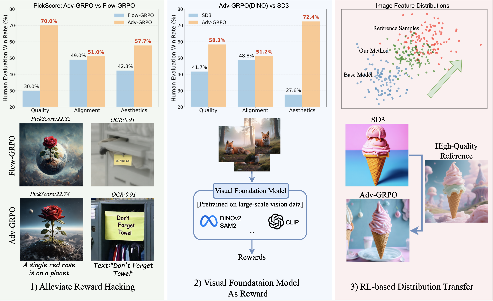
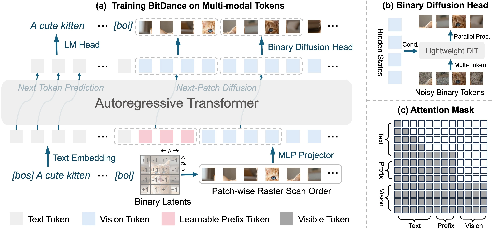
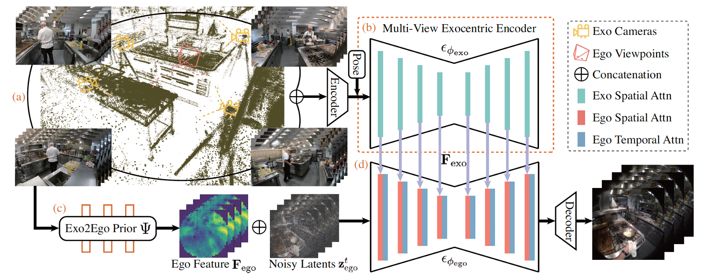
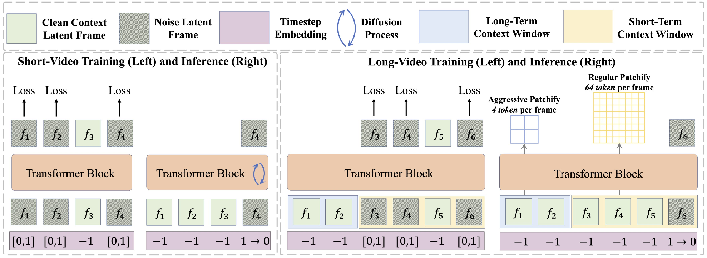

Weijia MaoPh.D. Student
Show Lab
|
|


Biography
I work on Vision + Language and Video Genration, including:
- Large Multimodal Models: Show-o, BitDance
- Reinforcement Learning Adv-GRPO, UniRL
- Video and 3D generation EgoExo-V, FAR
I was fortunate to intern at Tiktok work with Hao Chen, Zhenheng Yang.
I am open to discussions and collaborations, and actively seeking opportunities in the industry. Feel free to reach out.
News
- 2026 Feb: Adv-GRPO was accepted by CVPR 2026.
- 2025 Nov: Released Adv-GRPO , the first work to introduce adversarial training into RL for image quality optimization, leveraging high-quality reference images and a visual foundation model as the reward signal.
- 2025 May: Released UniRL, the first work to apply GRPO to unified multimodal models.
- 2025 Mar: Released our long-context video generation model FAR.
- 2025 Jan: Released UniMod, proposing an efficient training framework for unified models.
- 2024 Sep: Released Show-o, the first unified model that integrates both diffusion and autoregressive (AR) modeling.
- 2024 Aug: EgoExo-V was accepted by NeurIPS 2024.
- 2024 May: Released EgoExo-V, converting third-person videos into egocentric views using NeRF and video diffusion models.
- 2023 Nov: Released ShowRoom3D, the first work that combines NeRF and diffusion models for 3D scene generation.
- 2023 Jan: Joined Show Lab @ NUS to start my Ph.D. journey.
- 2022 Jan: Joined Show Lab @ NUS to start my Master’s journey.
Publications Google Scholar

|
Show-o: A Unified Multimodal Model Integrating Diffusion and Autoregressive Modeling
Jinheng Xie†, Weijia Mao†, Zechen Bai†, David Junhao Zhang†, Weihao Wang, Kevin Qinghong Lin, Yuchao Gu, Zhijie Chen, Zhenheng Yang, Mike Zheng Shou*.
ICLR, 2025. |
|
 |
Adv-GRPO: Adversarial Reinforcement Learning for Image Quality Optimization
Weijia Mao, Hao Chen*, Zhenheng Yang, Mike Zheng Shou*.
CVPR, 2026. |
|
 |
BitDance: Scaling Autoregressive Generative Models with Binary Tokens
Yuang Ai, Jiaming Han, Shaobin Zhuang, Weijia Mao, Xuefeng Hu, Ziyan Yang, Zhenheng Yang, Huaibo Huang, Xiangyu Yue, Hao Chen.
[project page]
[paper]
[code]
|
|
 |
EgoExo-V: Bridging Egocentric and Exocentric Video via NeRF and Diffusion Models
Jia-Wei Liu†, Weijia Mao†, Zhongcong Xu, Jussi Keppo, Mike Zheng Shou.
NeurIPS, 2024. |
|
 |
Long-Context Autoregressive Video Modeling with Next-Frame Prediction
Yuchao Gu, Weijia Mao, Mike Zheng Shou.
arXiv, 2025. |
Service
-
Conference Reviewer: CVPR, ICCV, NeurIPS, ICML, ICLR, etc.
-
Teaching Assistant: EE4309 Robot Perception ,